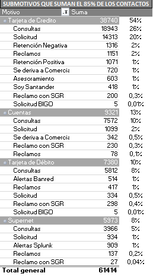

Plan de Mejora - Santander AT
Julio 2021
Situación Actual
Niveles de Julio 2021 (Al 26 de Julio)
| Canal | Nivel Atención | Nivel Servicio |
|---|---|---|
| Voice | 97% | 83% |
| SELECT | 100% | 94% |
| Chat | 80% | 80% |
| Mails | SLA 24hs | - |
% FCR
% NPS Gral
% NPS Oper
NPS 1 al 25 de Julio
| Skill | Encuestas | FCR | NPS G | NPS O |
|---|---|---|---|---|
| Tarjetas de Crédito | 6057 | 91% | 69% | 85% |
| Tarjetas de Débito | 2189 | 89% | 69% | 84% |
| Cuentas | 1855 | 87% | 69% | 84% |
| Denuncias | 1252 | 90% | 68% | 83% |
| Retenciones | 1192 | 97% | 65% | 87% |
NPS 1 al 25 de Julio
| Prestamos | 651 | 88% | 70% | 83% |
| SoySantander | 420 | 94% | 69% | 86% |
| SELECT | 385 | 89% | 70% | 87% |
| Sucursales | 204 | 93% | 82% | 93% |
| Seguros | 137 | 89% | 75% | 88% |
| SuperNet | 93 | 89% | 66% | 90% |
| Pymes | 65 | 87% | 55% | 73% |
| Activación TD | 54 | 96% | 61% | 76% |
Plan - Acción de Mejora
Gestión de Calidad con enfoque en los Detractores y Rellamados
| Semana | Cantidad |
|---|---|
| 1º Semana Junio | 179 |
| 2º Semana Junio | 236 |
| 3º Semana Junio | 217 |
| 4º Semana Junio | 199 |
| 1º Semana Julio | 209 |
| 2º Semana Julio | 243 |
| 3º Semana Julio | 276 |
| 4º Semana Julio | 201 |
Acciones
Llamar a estos clientes en menos de 24hs habiles para entender el motivo de la calificación y así evaluar los procedimientos/agentes
A estas interacciones, se les suman los clientes que se contactaron más de 3 veces en el día (promedian 8 clientes por día)
Entrantes vs Derivaciones de Ventas - Soy Santander
| Mes | Atendidas | Derivadas | % Derivadas |
|---|---|---|---|
| Junio | 972 | 560 | 58% |
| Julio | 1454 | 1020 | 70% |
El 70% de las llamadas ingresadas a Ventas - SoySantander están siendo derivadas por motivos de consulta
Acciones
Dejar una única opcion del IVR hacia AT - SoySantander, en caso de consulta comercial AT deriva a Ventas para su gestión.
El gran volumen actual es de consultas, generando derivaciones innecesarias y mayor interacciones (impactando en NS)
Principales Motivos
